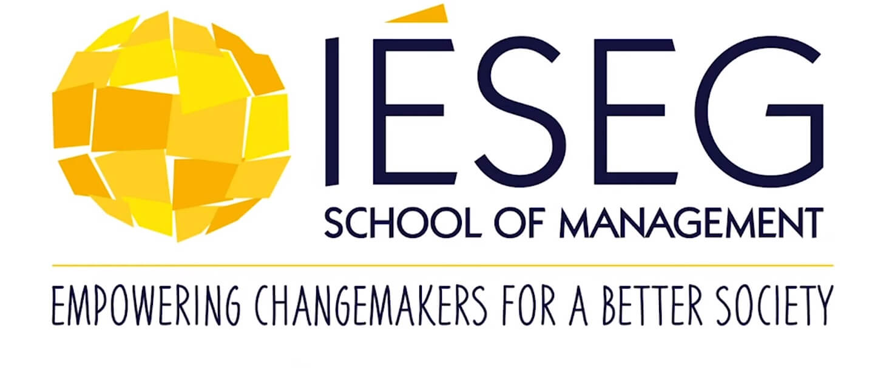
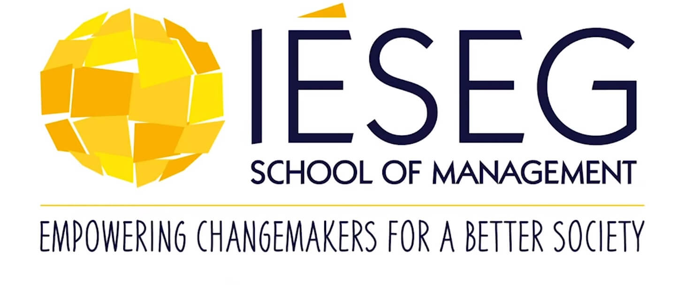

Bienvenu sur mon site développé spécialement pour le cours de career program !

 

Afin d'améliorer la navigation de mon site je vous invite à utiliser les menus ci dessous pour avancer dans les sections:
Mes missions
Mes mission sont très variés...
- J'organise et participe à des atelier UX pour l'évolution d'un portail à destination des développeurs du groupe
- Je fais des enquètes et des interviews auprès d'utilisateurs afin de recueillir leurs besoins
- Je prépare et anime 3 type d'événements :
- - "Fil d'actu" : c'est un format JT toutes les deux semaines à destination de la tribu DSP
- - "Genius Bar" : c'est un format conférence / keynote toutes les deux semaines à destination des IT du groupe (nous avons eu un record de 400 personne d'audience lors de notre seconde édition)
- - All staff / Exco : ce sont des réunions de managers de la filière IT que j'anime avec des ateliers ou des démonstrations.
- Je fais de la data analyse avec le suivi des KPIs et le reporting hebdomadaire sur notre portail
- Je fais du community management pour les squads présentes sur le réseau social d'entreprise Yammer
Mes moteurs
- Moteur 1: Explorer
Toujours à la recherche de nouveauté ou d'informations relatives aux évolutions des outils en interne, j'approfondi les sujets et me forme en permanence sur les solutions que nous fournissons à l'ensemble de la filière IT au sein du groupe SG. - Moteur 2: Construire
J'ai un caractère plutôt organisé et rigoureux (peut être issu de ma précédente carrière en cuisine). Quand je commence à aborder un sujet, je vais lister les auteurs et speakers sous forme de playlist pour ne rien manquer. - Moteur 3: Rencontrer
Au contact d'expert au sein de la tribu. J'ai tendance à me rapprocher d'eux et leur poser des questions pour approfondir. Je participe régulièrement à des webinar interne et vais en permanence à la rencontre de nouveux speakers pour les événements que j'organise.
- Explorer et Construire : Administrer et gérer
- Explorer et rencontrer : Communiquer et transmettre
- Construire et rencontrer : Faire du Business
Mon travail au quotidien correspond strictement à faire du business me donnent envie de communiquer et transmettre afin de gérer les projets.
Pourquoi GitHub ?
J'ai choisi de développer et d'héberger le site présentant la tribu DSP sur GitHub pour plusieurs raisons.
Tout d'abord, je suis très familier avec les langages HTML et CSS, et je trouve que c'est un choix naturel pour moi de les utiliser pour créer du contenu.
De plus, j'ai remarqué que la communauté IT utilise souvent GitHub pour héberger des projets open source et collaboratifs, ce qui montre à quel point cet outil est apprécié dans le milieu. Faisant partie, même de loin, de cette communauté, le choix de GitHub me parait naturel. (Attention, je n’ai évidemment publier aucune information sensible).
Ensuite, j'ai opté pour GitHub pour sa simplicité et sa convivialité. J'ai l'habitude de publier du contenu en Markdown au sein du groupe sur les différentes pages de documentation, et je trouve que cette syntaxe est très facile à utiliser pour rédiger des textes avec une mise en forme claire et professionnelle.
De plus, GitHub permet de créer des pages statiques avec une interface utilisateur minimaliste, ce qui convient parfaitement à mon objectif de présenter les différentes squads de la tribu.
Ma Tribu
Je suis fier de faire partie de la tribu DSP, qui signifie DevOps Service Platform. Nous sommes une tribu dynamique composée d'environ 110 membres passionnés, répartis en 9 squads, chacun travaillant sur un périmètre spécifique. Notre tribu est dirigée par un "Head of Tribe", Jean Guyot, et assisté par deux managers, Alice Pougeas et Eric Wisniewski. Eric est également mon maître d'apprentissage, et je suis très chanceux d'avoir un tel mentor pour m'accompagner dans mon développement professionnel.
Notre tribu se réunit tous les 3 mois pour planifier les tâches à venir lors de la cérémonie du PI (Program Increment) Planning, qui dure deux jours. Pendant ces deux jours, chaque équipe échange sur ses besoins et ses dépendances, afin de s'assurer que toutes les équipes travaillent en harmonie pour atteindre les objectifs de la tribu. Cette cérémonie du PI Planning est animée par notre RTE (Release Train Engineer), Hanin Slimen, qui veille à ce que tout se déroule sans accroc.
Notre tribu est fière de travailler sur des projets passionnants et de relever des défis complexes. Nous sommes tous déterminés à apporter notre contribution à l'amélioration des services de la Société Générale, et à construire ensemble une plateforme DevOps visible au sein de toutes les DSI à travers le monde.
Nos squads
Chaque squad au sein de la tribu DevOps de la Société Générale est composé d'une équipe de professionnels passionnés et engagés. Chaque squad dispose d'un PO (Product Owner) qui est chargé d'échanger avec les clients afin de comprendre leurs besoins et de prioriser les sujets en conséquence. Le PO travaille en étroite collaboration avec les membres de l'équipe pour s'assurer que les projets sont livrés à temps et avec la qualité attendue.
Chaque squad dispose également d'un Scrum Master, qui est responsable d'organiser les différentes cérémonies (stand-up meetings, sprints, etc.) et de rédiger les tâches dans l'outil de backlog, JIRA. Le Scrum Master travaille également en étroite collaboration avec les membres de l'équipe pour s'assurer que les projets sont livrés dans les délais impartis et respectent les exigences de qualité.
En plus de réaliser des évolutions sur leur périmètre lors des PI (Program Increments), chaque squad assure également le support pour leur solution en production. Ils sont en charge de résoudre les incidents, de fixer les bugs et de mettre à jour les produits.
Si vous êtes intéressé par le travail de nos squads et souhaitez en savoir plus sur les projets passionnants que nous menons, je vous invite à consulter les slides qui se trouvent ci-dessous pour découvrir en détail les missions et les projets en cours de chaque squad.


Mon role
En tant que responsable de la valorisation des solutions fournies par chaque squad au sein de la tribu DevOps de la Société Générale, mon rôle est crucial pour la réussite de nos projets. Je suis responsable de mettre en avant les réalisations de chaque squad et de leur donner la visibilité qu'elles méritent auprès des différentes parties prenantes de la filière IT du groupe.
Mon travail consiste également à renforcer les liens entre les différentes squads au sein de la tribu, en favorisant la collaboration et l'échange d'expertises. En travaillant avec moi, vous aurez la chance de contribuer à l'élaboration de solutions innovantes et de voir votre travail reconnu à sa juste valeur.
J'ai la chance de travailler avec des collaborateurs passionnés et talentueux, tous engagés dans la réussite de projets passionnants à la pointe de la technologie. Notre environnement de travail stimulant et motivant nous permet de développer nos compétences et de progresser dans notre carrière au sein de l'entreprise.
En travaillant dans cette tribu, je suis convaincu que je peux contribuer à la réussite de la Société Générale en tant que leader de l'innovation dans le secteur de la finance. Je suis fier de faire partie d'une équipe de collaborateurs engagés, qui travaillent ensemble pour élaborer des solutions technologiques innovantes et répondre aux besoins de nos clients.
Si vous êtes passionné par le domaine de l'informatique et souhaitez contribuer à l'innovation et à la réussite de la Société Générale, alors je vous encourage à rejoindre notre tribu DevOps. Vous aurez la chance de travailler sur des projets passionnants et de contribuer à la réussite de l'entreprise tout en développant vos compétences professionnelles.
Pourquoi nous rejoindre ?
Si vous êtes à la recherche d'une opportunité passionnante dans le domaine de l'informatique, rejoindre l'équipe DevOps de la Société Générale pourrait être la solution idéale pour vous.
En tant que membre de notre équipe DevOps, vous aurez la chance de travailler sur des projets innovants à la pointe de la technologie, avec un impact direct sur les clients de la Société Générale. Vous serez entouré d'une équipe de collaborateurs passionnés et motivés, travaillant ensemble dans une culture de collaboration et de travail d'équipe.
Notre tribu croit fermement dans la formation continue de nos membres, et vous aurez de nombreuses opportunités de développement professionnel pour vous aider à progresser dans votre carrière. Chez la Société Générale, vous bénéficierez également d'un environnement de travail stimulant et motivant, avec du matériel de qualité et des locaux à l'ambiance “start-up".
En tant que grande entreprise, la Société Générale offre également des avantages tels que la stabilité de l'emploi et des opportunités de mobilité interne. Vous aurez ainsi la possibilité de développer vos compétences et de progresser dans votre carrière au sein de notre entreprise dynamique et en constante évolution.
Si vous êtes passionné par la technologie et souhaitez travailler pour une entreprise qui vous offre des opportunités stimulantes et enrichissantes, rejoignez l'équipe DevOps de la Société Générale dès maintenant. Nous sommes impatients de travailler avec vous et de voir ce que nous pouvons accomplir ensemble.